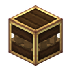

黄铜包齿轮，高级产线的配色。
参数
材料齿轮 + 黄铜机壳
作用包壳隔离/装饰
成本高于安山版
详细教程
怎么获得
手持黄铜机壳右击放好的齿轮即可包壳，机壳消耗 1 个；黄铜机壳由黄铜锭右击去皮原木得到，一块锭只包一块木头，别指望一个锭包两块。
黄铜要铜锭加锌锭在搅拌器里混，一次出 2 个；包壳之前先算好要用几个，做到一半断锌就得整条线等料，铜锌两种锭最好一起备。
怎么用
功能上和安山齿轮箱一模一样：照常传旋转，侧面扳手开关轴口，包壳后新接的组件不会自动连轴，用法不用重新学，成本差别却很大。
区别主要在外观和成本；黄铜色适合放在机械臂、转速控制器旁边做统一配色，纯功能场合用安山版更划算，能省下大量黄铜，纯装饰用安山就够。
常见坑
包壳只认安山和黄铜，铜机壳、光辉机壳都装不上；手上拿着别的机壳右击半天没反应，不是 bug，换一种机壳就行，铜机壳只能当装饰。
拆壳时对着轴面用扳手会先关轴口，再拆才拿回机壳；直接挖掉会连齿轮一起掉，材料白白多损耗一份，拆前先看一眼手上面，别把机壳也一起挖碎。
获取方式
这个物品没有合成配方：它由工具或机器直接生成/放置（例如用扳手、连接器、部署器，或作为其他配方的产物）。具体见上方教程。
官方教程 · 使用齿轮来传递旋转力
- 齿轮会将动力传递至临近的齿轮
- 以此方式连接的齿轮，旋转方向相反
官方教程 · 使用大齿轮传递旋转力
- 大齿轮可以从特定的角度相互连接
- 可以利用大齿轮变更旋转轴向